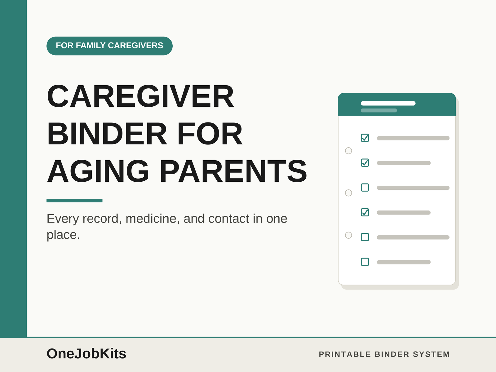

OneJobKits · Kit #3
Caregiver Binder System — caregiver binder printable

If you searched for a caregiver binder printable, something probably just changed: a parent fell, got a diagnosis, or came home from the hospital — and the information scattered fast. Medications in one notebook, doctors in your phone, instructions in somebody's memory.
Start with the three pages every family needs tonight — free, on this page, no sign-up wall between you and the download. They are the first pages of the full Binder System described below: a 60+ page organiser that puts all of it in one place, in a format any caregiver — you, a sibling, a paid carer — can pick up and use on day one. Caregivers in our research kept asking the same question — "where are the strategies?" This is the answer we built: not more advice, a system.
Free download — start with the Caregiver Starter Pack
The Caregiver Starter Pack is the emergency face sheet, the master medication list, and one week of daily care log pages — the three pages of the binder that get used first, as a printable, fillable PDF. Type into it on a computer or tablet, or print it and write by hand.
Download the free caregiver starter pack (PDF)Get it on Gumroad instead
What the starter does not cover: the other 60 pages — the care team directory, health trackers, appointment question pages, the insurance and documents locator, the hospital-bag checklist, the respite schedule, and the 10-page First Week guide that tells you what to fill in first, in order, when everything feels urgent.
What's inside the full kit
- 60–70 page fillable PDF binder — type into it on a computer or tablet, or print it and write by hand (US Letter + A4, full-colour and ink-saver versions)
- Emergency face sheet — the one page first responders and ER staff need
- Care team & contacts — doctors, pharmacy, hospital, family, neighbours
- Medical history & allergy summary
- Medication system — master medication list, daily medication log, and a refill tracker
- Health trackers — vitals, blood pressure, glucose, weight, and lab results
- Appointment pages — visit logs plus question pages so nothing gets forgotten at the doctor's office
- Daily care log & handover notes — written for households with MORE than one caregiver, so shifts hand over cleanly
- Insurance & documents locator — what exists, and exactly where it is kept
- Hospital-bag checklist and respite / paid-carer schedule
- 10-page "First Week" quick-start guide — what to fill in first, in order, when everything feels urgent
- Bundle ($49) adds: the Legacy / Executor Binder add-on pack — the end-of-life and estate paperwork system this binder's documents locator points to
A filled example — so you can see the finished thing
Here is the binder filled in — a sample first week for one fictional family, so you can see the shape. Margaret and every detail below are invented for illustration; your binder holds your family's real information, copied from the labels, letters and cards you already have.
| Page | What the sample family wrote |
|---|---|
| Emergency face sheet | Name, address, conditions and allergies in her own words, the hospital she uses, and the two phone numbers that must be called first — one page, on the fridge |
| Master medication list | 6 current medications, each copied word for word from the pharmacy label, with the refill tracker flagging the one that runs out on the 12th |
| Care team & contacts | 3 doctors, 1 pharmacy, the hospital switchboard, 2 neighbours with keys |
| Daily care log | 7 days of entries across two caregivers — the night-shift note ("restless after 2 a.m.") written where the morning caregiver will actually see it |
| Documents locator | Insurance card (wallet), policy documents (blue folder, study drawer), hospital letters (binder, section 4) — what exists, and where it lives |
Nothing in that sample required new information. It required one place — which is the entire product.
Who it is for
Adult children coordinating care for a parent — especially in the first weeks after a diagnosis, a fall, or a hospital discharge — and any household where care is shared between siblings, family and paid carers.
Who it is not for
Anyone looking for medical, legal or care advice. This is an organiser, not medical advice: it stores the information your medical team gives you; it does not replace them, and it never tells you what the information should be.
Questions buyers ask
- Where are the strategies? What do I actually do first?
- That question — asked word for word by caregivers in our research — is why the binder opens with a 10-page First Week quick-start guide: what to fill in first, in order. Face sheet tonight, medication list tomorrow, contacts and documents locator this week. The free starter pack on this page is pages one to three of that sequence.
- What should I pack in a hospital go-bag for my elderly parent?
- The binder includes a hospital-bag checklist, built around the sudden-trip moment caregivers in our research kept raising ('Is the hospital bag packed? Just in case?'). The essentials: the emergency face sheet on top, current medication list, insurance and ID copies, phone charger, glasses and hearing-aid basics, and a change of clothes — packed before you need it, not during.
- Agencies and offices keep asking for documents we can't find. How does this help?
- That dead-end — a legal or agency process stalled because a document lives nowhere — is what the Insurance & Documents Locator page exists to end. It holds no documents itself; it records what exists and exactly where it is kept, so any family member can put a hand on the right paper in one try.
- How do you organise all your family's important documents in one place?
- One locator, one binder, one rule: the binder records where things live rather than pretending to be a filing cabinet. Care documents sit in the binder's sections; the locator covers everything else — insurance, policies, hospital letters, legal papers — with the shelf, folder or drawer named.
- More than one of us provides care. Will this work for us?
- It was designed for exactly that. The daily care log and handover notes are written for households with more than one caregiver, so a shift ends with the next person reading what happened — sleep, appetite, mood, anything unusual — instead of reconstructing it from texts.
- Is this medical advice?
- No. It is an organiser. It stores the information your medical team gives you — medications copied from their labels, instructions as they were given — and it does not replace your medical team or add anything to what they said.
- Do I print it or fill it in on a screen?
- Either. The binder is a fillable PDF in US Letter and A4, in full-colour and ink-saver versions: type into it on a computer or tablet, print the pages you need for the fridge and the hospital bag, or print the whole binder and write by hand.
Prices
Standard: $37 · Bundle: $49 — one-time payment, digital download. No subscription; the files are yours.
Can't find the kit you need?
We build it. Ask us — first asker gets it at half the shelf price. Tell us the job at onejobkits.com and we will build the kit for it.
Read the guide
Related kits
Please know: this is an organiser, not medical advice. It stores the information your medical team gives you; it does not replace them. The sample family in the example above is fictional and included only to show the shape of a filled binder.